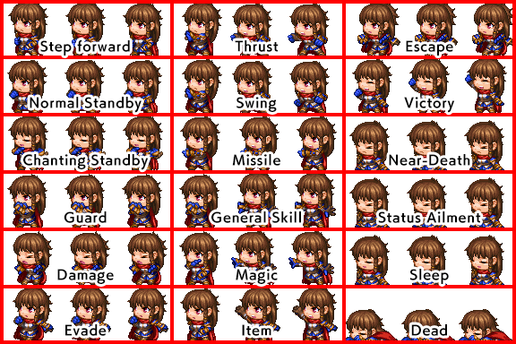

RPG MAKER MZ HELP
Documentation

Side-View Character Standards
These are the standards for images used as the battle graphics of actors displayed in Side-View Mode. Each character will use their own image file.
Specifications
-
Images are stored in a file in a 9x6=54 pattern.

- The width of the image is 9 and the height is 6, which becomes the size for 1 character.
- The image size for standard assets is 576x384 pixels.
-
3 patterns lined up in a row will be treated as one motion.
- Looping standby motions will be repeatedly displayed in a 1-2-3-2 order starting from the left.
- Motions that occur only 1 time such as damage motions will be shown in 1-2-3 order starting from the left.